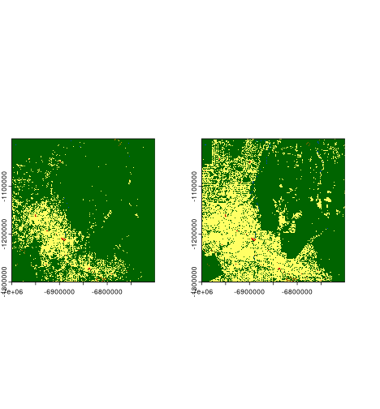
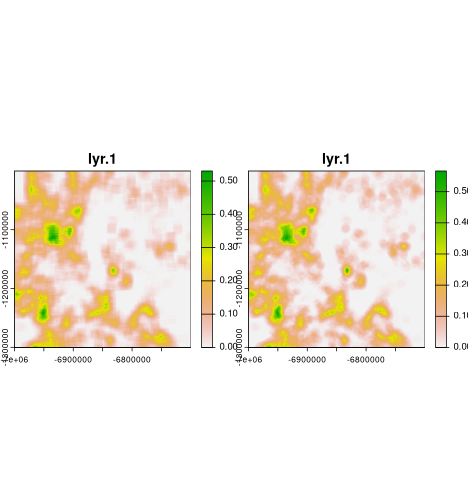
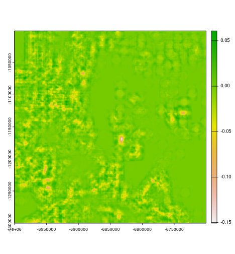
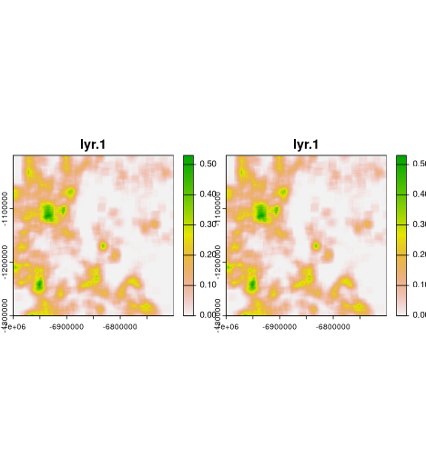
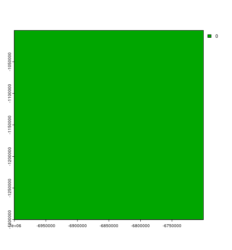

Comparing spatial patterns using moving window approach
Jakub Nowosad
2024-01-20
Introduction.Rmd
# remotes::install_github("nowosad/motifmw")
# remotes::install_github("nowosad/spquery")
library(motifmw)
library(spquery)
library(terra)
coltb = read.csv("https://osf.io/download/2qd5k/")
coltb = coltb[c("value", "color")]
coltab(lc92) = coltb
coltab(lc18) = coltb
plot of chunk unnamed-chunk-4

plot of chunk unnamed-chunk-6
Square window

plot of chunk unnamed-chunk-7
system.time({
lc92s = motifmw::lsp_signature_mw(x = lc92, window = window)
lc18s = motifmw::lsp_signature_mw(x = lc18, window = window)
lc_compare = spq_compare(lc92s, lc18s, dist_fun = "jensen-shannon")
})
#>
|---------|---------|---------|---------|
=========================================
|---------|---------|---------|---------|
=========================================
#> user system elapsed
#> 276.873 27.191 304.634
plot(lc_compare)
plot of chunk unnamed-chunk-9
Circle window
window2 = focalMat(rast(window), 25, type = "circle")
window2[window2 > 0] = 1
window2[window2 == 0] = NA
plot(rast(window2))
plot of chunk unnamed-chunk-10
system.time({
lc92s2 = lsp_signature_mw(x = lc92, window = window2)
lc18s2 = lsp_signature_mw(x = lc18, window = window2)
lc_compare2 = spq_compare(lc92s2, lc18s2, dist_fun = "jensen-shannon")
})
#>
|---------|---------|---------|---------|
=========================================
|---------|---------|---------|---------|
=========================================
#> user system elapsed
#> 256.107 33.083 289.627

plot of chunk unnamed-chunk-12

plot of chunk unnamed-chunk-12
Comparison to the slower approach
calculate_cove_focal = function(landscape_values, raster_window) {
extract_cove = function(x, classes){
comat::get_cove(comat::get_coma(x, classes = classes), ordered = FALSE, normalization = "pdf")
}
raster_window[!is.na(raster_window)] <- landscape_values[!is.na(raster_window)]
result = extract_cove(x = raster_window, classes = 1:9)
return(result)
}
system.time({
lc92sb = terra::focal(x = lc92, w = dim(window), silent = FALSE, fun = calculate_cove_focal, raster_window = window)
lc18sb = terra::focal(x = lc18, w = dim(window), silent = FALSE, fun = calculate_cove_focal, raster_window = window)
lc_compare1b = spq_compare(lc92sb, lc18sb, dist_fun = "jensen-shannon")
})
#>
|---------|---------|---------|---------|
=========================================
|---------|---------|---------|---------|
=========================================
#> user system elapsed
#> 531.132 51.240 583.975

plot of chunk unnamed-chunk-14

plot of chunk unnamed-chunk-14
# c1d1 = resample(c1["dist"], lc_compare)
# c1d2 = resample(c1["dist"], lc_compare, method = "near")